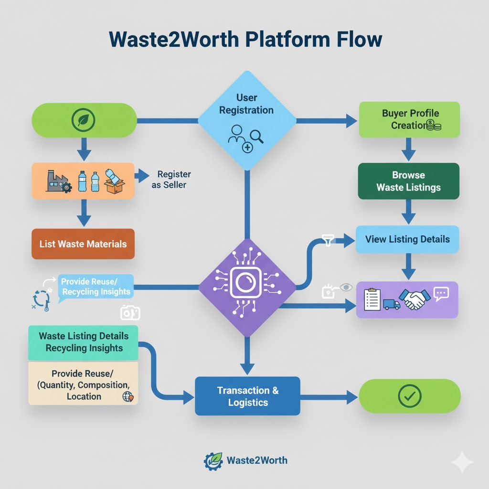

Waste2Worth: Structure & Platform Flow
Waste2Worth orchestrates the transformation of waste into value.
Our flow merges intuition (linear steps) and intelligence (dynamic platform analytics) to unify business, compliance, and impact.

Our flow merges intuition (linear steps) and intelligence (dynamic platform analytics) to unify business, compliance, and impact.
Platform Functioning: Step-by-Step

List Waste
Producer submits material types, quantities, and location.
→

Marketplace Visible
Buyers filter listings, view details, and consider options.
→

Discover & Connect
Smart matching connects buyers with suitable producers.
→

Transaction & Logistics
Logistics, compliance, and payment initiated automatically.
→

Waste Transfer
Materials shipped & verified; compliance records stored.
→

Impact Tracked
CO₂ saved, tons diverted; impact visualized on dashboards.
Platform Features
Smart Registration & Profiles
Both sellers and buyers create profiles. Smart onboarding and compliance checks enable transparency and trust.
AI-Powered Discovery & Insights
Our platform uses artificial intelligence for listing recommendations, waste composition prediction, and price analytics.
End-to-End Transaction Automation
Auction, bidding, contracts, and logistics are handled seamlessly and securely through our integrated tools.
Impact Measurement & Reporting
Users see their positive eco-impact — landfill diversion, CO₂ reduction, and compliance — with real-time tracking.
Impact in Action
Environmental & Economic Impact
- Thousands of tons diverted from landfills yearly.
- Real reductions in carbon footprint across supply chain.
- Industries save costs and gain new revenue streams.
- Businesses participate in a dynamic circular economy.
Evolved Visuals & Process Flow Examples